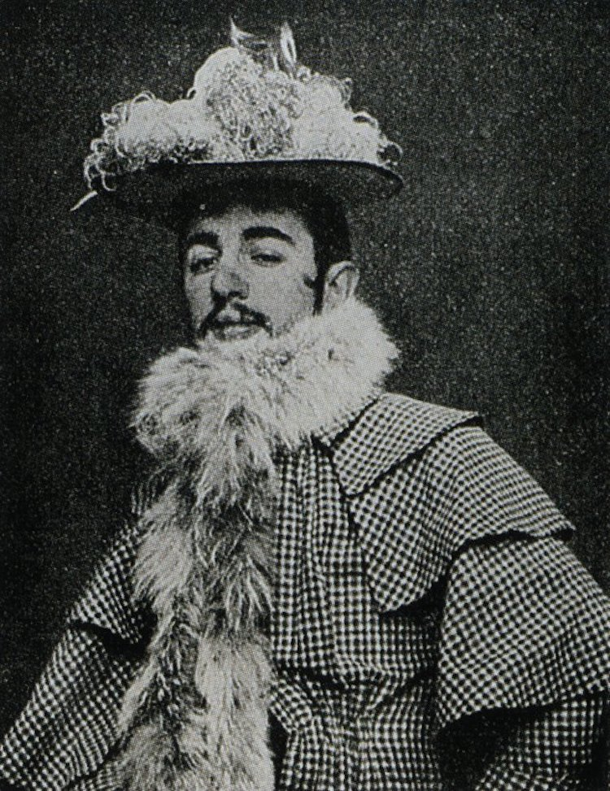
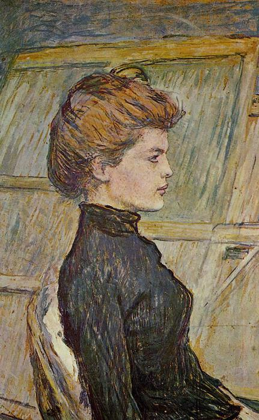
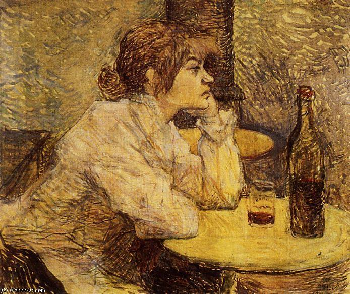
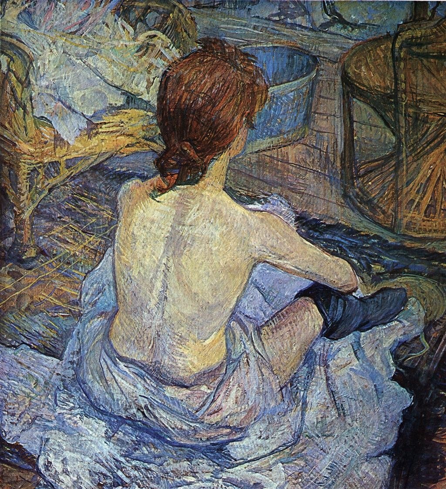
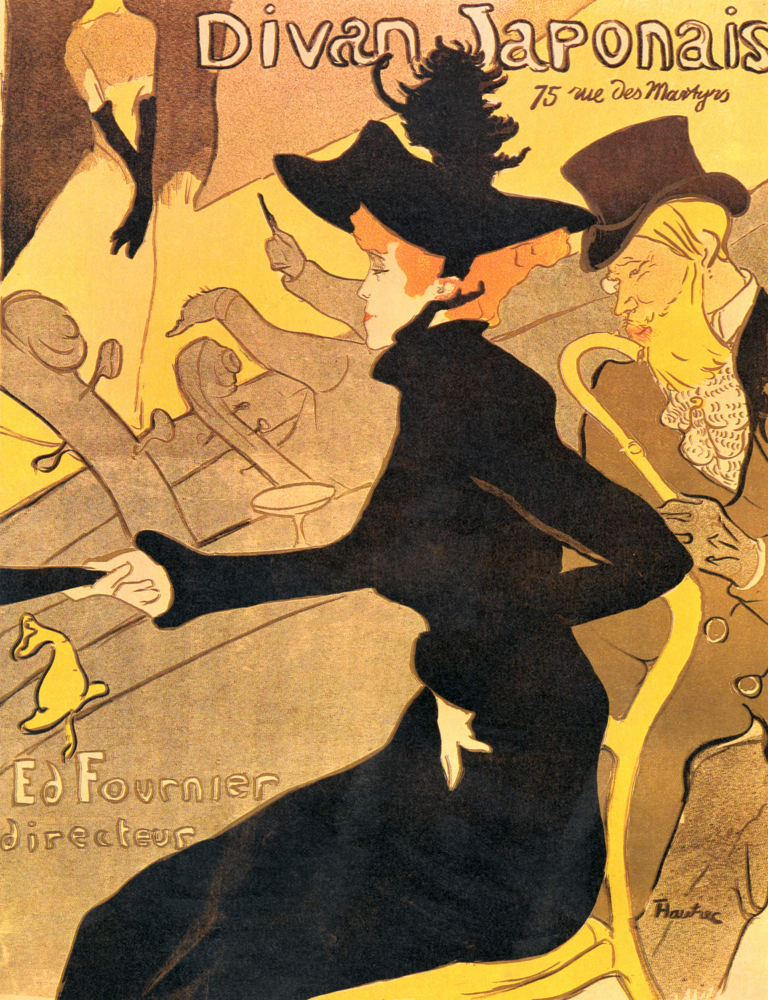
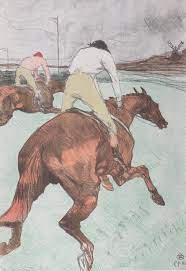
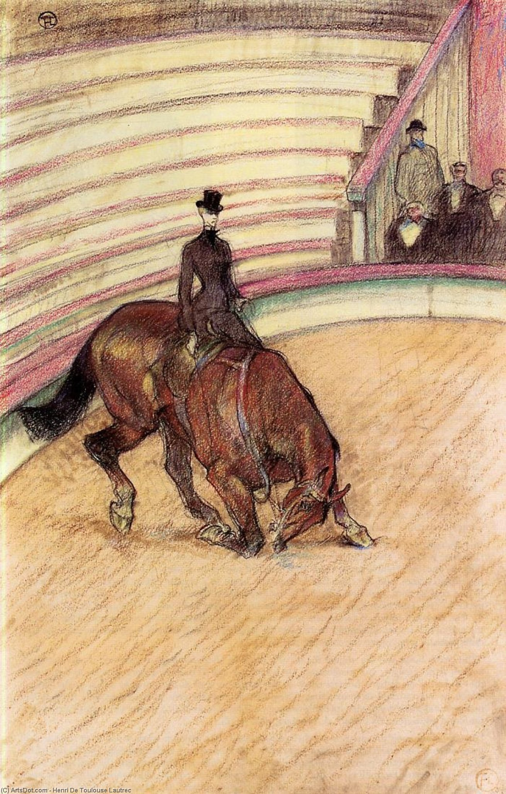

Conocido simplemente como Toulouse-Lautrec, fue un pintor y cartelista francés, que destacó por la representación de la vida nocturna parisina de finales del siglo XIX. Se le enmarca en el movimiento postimpresionista, pero hay debates sobre si la intención subversiva de su obra contra el statu quo de las relaciones extra-matrimoniales debe hacer su obra única, creando su categorización propia e inconmensurable.

Henri de Toulouse-Lautrec
PINTOR DEL POST-IMPRESIONISMO
Biografia
Su infancia fue feliz a pesar de que padeció una enfermedad que afectaba al desarrollo de los huesos y que comenzó a manifestarse en él en 1874. Su constitución ósea era débil y entre mayo de 1878 y agosto de 1879 sufrió dos fracturas en los fémures de ambas piernas, que le impidieron crecer más, alcanzando una altura de 1,52 m.
Toulouse-Lautrec decidió ser pintor, y con el apoyo de su tío Charles y unos pintores amigos de la familia, como Princetau, John Lewis Brown y Jean-Louis Forain, fue a vivir a París en 1881. Allí, fue alumno de Léon Bonnat, que era un retratista de moda, y, cuando se cerró el taller de Bonnat en septiembre de 1882, tuvo que buscar un nuevo maestro, Fernand Cormon. En el estudio de Cormon se hizo amigo de Vincent van Gogh.
En 1884 Toulouse-Lautrec fue a vivir al barrio de Montmartre, donde tuvo vecinos como Degas. La fascinación que sentía por los locales de diversión nocturnos le llevó a frecuentarlos con asiduidad y hacerse cliente habitual de algunos de ellos como el Salón de la Rue des Moulins, el Moulin de la Galette, el Moulin Rouge, Le Chat Noir o el Folies Bergère. Todo lo relacionado con este mundo, incluida la prostitución, constituyó uno de los temas principales en su obra. En sus obras de los bajos fondos de París pintaba a los actores, bailarines, burgueses y prostitutas. A estas las pintaba mientras se cambiaban, cuando acababan cada servicio o cuando esperaban una inspección médica.
Al contrario que los artistas impresionistas, apenas se interesó por el género del paisaje, y prefirió ambientes cerrados, iluminados con luz artificial, que le permitían jugar con los colores y encuadres de forma subjetiva. Muy observador, le atraían la gestualidad de los cantantes y comediantes, y le gustaba ridiculizar la hipocresía de los poderosos, que rechazaban en voz alta los mismos vicios y ambientes que degustaban en privado.
"En París comprendí que gran pintor era Toulouse-Lautrec"
Pablo Picasso
"[...] una cosa nunca es bella sólo porque sea nueva[...], la novedad es rara vez lo esencial"
Henri de Toulouse-Lautrec
Galeria

Starry Night
1889, Oil on Canvas

Starry Night
1889, Oil on Canvas

Starry Night
1889, Oil on Canvas

Starry Night
1889, Oil on Canvas

Starry Night
1889, Oil on Canvas

Starry Night
1889, Oil on Canvas